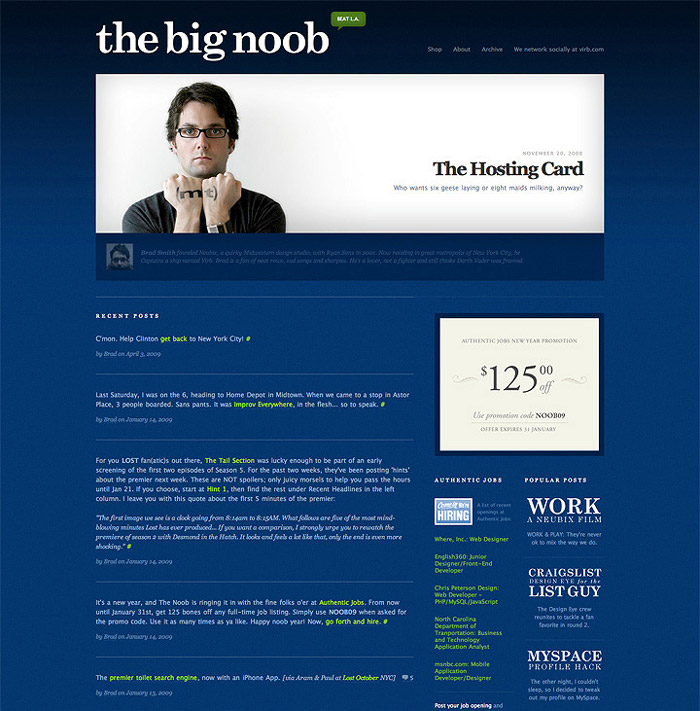

ABOUT BRAD
Brad Smith lives in a small box on an island named Manhattan. By day, he is the CEO & Founder of Virb—the social network turned DIY website builder. When the sun sets, he is an advisor, investor, end user of fine whiskey, and snapper of Instagrams.
In 2001, he founded Neubix Studios, a corn-fed, midwestern design agency, which became widely recognized for its simple, yet groundbreaking designs—apparent on sites like The Big Noob: a big, blue blog about nothing.
Circa 2005, Brad took a hiatus from client work and moved his company to Boston to join forces with the team at PureVolume. Now hailing from New York City, Brad and his team have charted a course into the land of easy-to-use, do-it-yourself website builders.
His next destination: Unknown. To be continued…
Did you all move to Boston?
At that point, there were five of us involved in Neubix and I had a couple of people who didn’t want to move a thousand miles. I knew I wanted Ryan Sims and Keegan Jones to join me. When Keegan started working for Neubix as an intern, his mom brought him to work because he was too young drive—he’s going to kill me for saying this. He was unable to move to Boston with us because he was still in high school, but he continued to work with us remotely for about four months. Even though we closed up shop at Neubix, we still had client projects to wrap up and he helped with those.
In Boston, we worked on building PureVolume and the company grew from six to eighteen people. The PureVolume product was making enough money to support the company, so it was time for product number two. We had already known that we wanted to create a MySpace alternative. At the time, Facebook was edu-only and MySpace was king. We knew there was a better way and wanted to make a beautifully designed social network. We released Virb as a MySpace alternative in private beta in the winter of 2006 and ran it invite-only for the first three months until we officially launched with a big event at SXSW in March of 2007.
INTRODUCTION
Stories are powerful reminders that we are never alone and we’ve been continually reminded of that since beginning TGD in August 2011. Over and over again, we’ve received responses from readers who have felt a connection with the experiences of people we’ve featured. From the beginning, we have encouraged those we interview to be as open and honest as they’re comfortable with—those moments of vulnerability are the moments of deepest resonance. This is Brad’s story, uncensored. Drawing upon his wealth of experiences, he offers us what he’s learned about business, risk, purpose, community, and finding success in the unlikeliest of places—because sometimes success first looks like failure.
Describe your path to becoming an entrepreneur.
I always knew I wanted to build a business. As a kid, instead of playing “house”, I played “business”. I “sold” items out of my bedroom and, when my sister came into my room, I’d sell her items in exchange for Monopoly money.
I discovered web design during my college years when I dropped out of college to work at a “communications” company in Springfield, MO. There, I discovered web design and fell in love with it. I was teaching myself new things and succeeding at something, faster than I was in higher education. It was 1998 and the company’s offerings were dial-up Internet access, pagers—yes, pagers—and cell phones and a small web department. I was hired on as a designer, but within six months, I was managing the department. We had grown from five people to nine. In addition to managing the department, I was learning to design in Photoshop and programming in ASP.
I worked at that company for almost two years, but business wasn’t going too well for them. To cut costs, they were going to kill the entire web department, which had the most people. The president came in and told us he had to give everyone two weeks notice. I thought about it over the weekend, talked with my stepdad over the phone to ask for advice, and went into my boss’ office on Monday morning and said, “I’ve done a lot of work and kicked a lot of ass to grow this department. I don’t want to just let this go away.” He agreed to give me access to all our existing clients if I were to start my own company. I immediately had two weeks to start a new business. I was completely naive and made some of the worst business decisions of my life, but two and a half weeks later, I had an office space rented; we had computers and desks; and we were running a web design shop.
“I discovered web design during my college years when I dropped out of college to work at a ‘communications’ company in Springfield, MO.”
